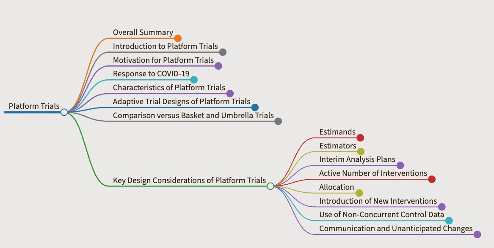

Platform Trials#
Presenter : SooYoung Kwak

Overall Summary#
Platform trials evaluate multiple interventions over time, often against a common control group.
New interventions can be added, and existing ones can be dropped based on emerging data.
This design offers flexibility and efficiency, especially for areas needing assessment of multiple therapeutic options or during public health emergencies.
They often use a master protocol for standardized procedures and infrastructure.
While frequently randomized and incorporating adaptive designs, they can also be non-randomized or use fixed sample designs.
Introduction to Platform Trials#
Platform trials allow for the assessment of multiple interventions, simultaneously or sequentially, against a common control within a single, overarching trial structure.
These trials are designed to be perpetual, enabling the addition of new treatments and the discontinuation of existing ones based on data.
Their adaptability is particularly useful for rapidly evolving research areas or emergencies like the COVID-19 pandemic.
A master protocol standardizes procedures and often utilizes a shared control group, enhancing efficiency and reducing redundancy.
Though typically randomized and potentially adaptive (adaptive platform trials), they can also be non-randomized or employ fixed sample designs.
An example includes a trial starting with several arms (including a common control), where interventions may be stopped, new ones added, and the trial continues with remaining and new arms against the control.
Motivation for Platform Trials#
Traditional two-arm clinical trials comparing a single experimental intervention to a control can be inefficient when many treatments require evaluation.
Platform trials address this by allowing the study of multiple interventions, including those not available at the trial’s start, in a continuous, adaptable manner.
A key benefit is the potential for the control group to evolve if an experimental therapy proves superior and becomes the new standard of care.
This “disease-focused” approach is beneficial for finding the best treatment for a condition, especially with multiple candidates.
Response to COVID-19#
The COVID-19 pandemic underscored the value of platform trials.
While many traditional trials struggled, several large-scale platform trials (e.g., RECOVERY, SOLIDARITY, REMAP-CAP) successfully generated actionable evidence for COVID-19 treatments.
These trials shared characteristics like governance by a master protocol and evaluation of multiple, sometimes initially unspecified, interventions.
Their success highlighted advantages over traditional designs in a pandemic, extending their utility beyond oncology.
Characteristics of Platform Trials#
Shared Infrastructure and Standardized Procedures: Establish a large trial network across multiple sites with standardized operating procedures via a master protocol.
Centralized Systems: Utilize coordinated screening and centralized trial systems (e.g., common databases, randomization systems) to streamline processes and enhance data quality.
Reduced Redundancy: Focus efforts to minimize inefficiencies associated with multiple independent trials.
Efficiency in Control Group Usage: Require fewer patients in the control group compared to multiple separate trials, saving costs and allowing more interventions to be tested or the same questions addressed with fewer resources.
Dynamic Standard-of-Care: Allow the control and standard-of-care to be updated if an intervention proves effective, enabling ongoing research to build on new standards.
Adaptive Trial Designs of Platform Trials#
Adaptive platform randomized trials, often termed multi-arm, multi-stage (MAMS) designs, are the most common type.
They feature multiple interim analyses as part of their adaptive nature.
Unlike some MAMS designs, platform trials permit the addition of new experimental arms and adaptation of the control arm during the trial.
Well-planned adaptive platform trials employ statistical analyses with pre-specified adaptations and decision rules, often using sequential designs for early stopping (futility or efficacy).
Response adaptive randomization, adjusting allocation ratios based on interim results, can be a feature but is not universal.
Simulations are vital in planning to assess design features and determine the optimal approach.
Comparison versus Basket and Umbrella Trials#
Platform, basket, and umbrella trials all operate under a master protocol framework.
Basket Trials: Test a targeted therapy across multiple diseases sharing a common molecular alteration or predictive risk factor.
Umbrella Trials: Assess multiple targeted therapies within a single disease, stratified into sub-studies by different molecular or predictive risk factors.
Both basket and umbrella trials can be structured as platform trials if they incorporate a common control group and allow for the addition of new interventions over time.
Key Design Considerations of Platform Trials#
Estimands#
Clearly defining the treatment effect of interest (the estimand) is crucial.
Platform trials evaluating multiple interventions might need to define estimands for different therapies, though a common primary estimand and endpoint strategy is often initially used.
When new interventions are added, their primary estimand should be clearly defined based on scientific merit, not unblinded trial data.
The aim is to minimize deviations from the master protocol as new arms are introduced.
Estimators#
With multiple hypotheses, pre-specification of how each estimand will be estimated is important.
The statistical analysis plan must detail primary and interim analysis plans.
Pairwise comparisons between intervention arms and the control are common.
Sample size calculations should ensure adequate power and control of type I error for each comparison.
New arms should generally have the same recruitment target as initial arms for their primary comparison.
Interim Analysis Plans#
Careful planning of interim analyses (frequency, timing, outcomes, decision rules for adaptations) is essential.
Frequent interim analyses, if not managed properly, can increase the risk of false findings.
For platform trials allowing early stopping for superiority, controlling potential inflation in false positive rates is critical.
The timing of interim analyses is key; very early analyses with small datasets can lead to erroneous decisions.
An adequate “burn-in” period is necessary to collect sufficient data before the first interim evaluation.
Using intermediate outcomes can be efficient for screening but depends on their strong association with the primary outcome.
Decision rules for dropping or graduating arms can be frequentist or Bayesian; no default exists, as each trial has unique features and goals.
These rules are typically pre-specified before patient enrollment or activation of a new sub-study.
Active Number of Interventions#
Pre-specifying a maximum number of concurrently active arms is advisable for operational feasibility.
More active arms increase trial management complexity and can lead to recruitment challenges.
The number of active arms may change over time.
If control arm data are from a period outside the active recruitment for a new arm, the validity of including these older data must be carefully considered due to potential temporal variability.
Allocation#
The allocation ratio between intervention and control groups is important, particularly for primary control comparisons.
Statistical power can sometimes be improved by allocating more participants to the control group.
While too few in the control can reduce power, adaptive designs like response adaptive randomization (shifting allocation to more promising arms) can offer ethical advantages.
For primary analysis against the control, maintaining adequate control allocation is crucial; overall control allocation can be minimized even with response adaptive randomization among experimental arms.
Response adaptive randomization is not a defining characteristic of all platform trials.
Introduction of New Interventions#
Adding new interventions requires evaluating scientific merit, mechanism, safety, administration ease, and cost.
An independent working group often reviews proposals for new interventions.
Platform trials may use pre-specified criteria to grade which types of interventions are added.
Industry partnerships might be involved, necessitating clarity on data collection, sharing, and financial support for the new comparison.
Use of Non-Concurrent Control Data#
In platform trials, interventions may start and end at different times, leading to a mix of concurrent and non-concurrent controls for new interventions.
Disease characteristics and populations can change over time, making prognostic balance challenging with non-concurrent controls.
While concurrent controls are ideal, all trial data (concurrent and non-concurrent) can be used for primary analysis, but sensitivity analyses with only concurrent data are vital for transparency.
Statistical methods like dynamic borrowing can account for temporal variations in the control group.
Communication and Unanticipated Changes#
Protocols should pre-specify plans for disseminating trial results.
Given the long-term nature, scientific questions may evolve.
Updating the control arm based on internal trial findings of superiority is ethical; updates based on external discoveries can be complex.
Platform trials should plan for secondary analyses of their rich, standardized data.
Conducting additional simulations as more data become available can validate or refine initial planning assumptions.